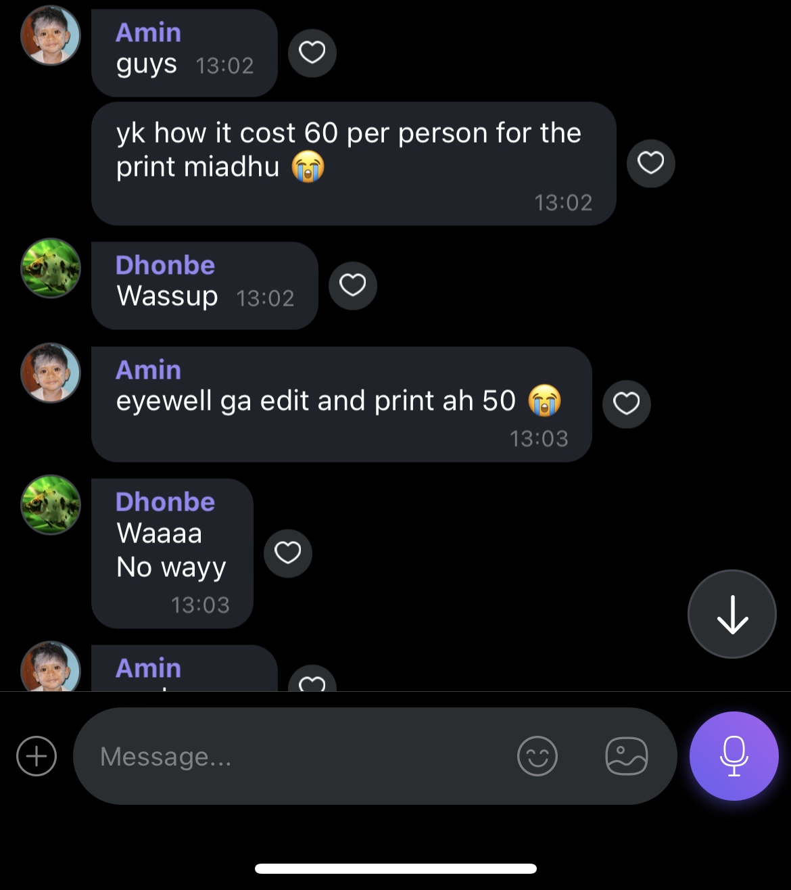

Who would’ve thought that the leaving certificate would turn into a huge thing. Everyone thought it was just a gonna be as simple as taking the stuff the school that they said they need for the certificate. But we (the ladies) couldn’t have been more wrong. Turns out the school has some peculiar requirements for the photo but we were only told that we needed to wear official uniform with a blue background, leaving out the key requirement of having absolutely no beard. Could this be considered discrimination against beards? Who knows atp.
The school was totally okay with the girls having massively luscious beards but couldn’t accept the ladies having a little facial hair. From what our sources tell us the school said to edit the photo and reprint it which isnt very cheap from most places. So some of the guys turned to snapchat filters to remove their luscious beards. The guy with the most full beard which is obviously aduhelm was denied of his passport photo saying the beard was too luscious and luxurious for a school student, which came as huge suprise to everyone. But whats even more surprising is the fact that the school accepted Aahil’s passport photo. So maybe we were too accepting of their obnoxious requirements and should’ve been less tolerant with their passport photo specifications.